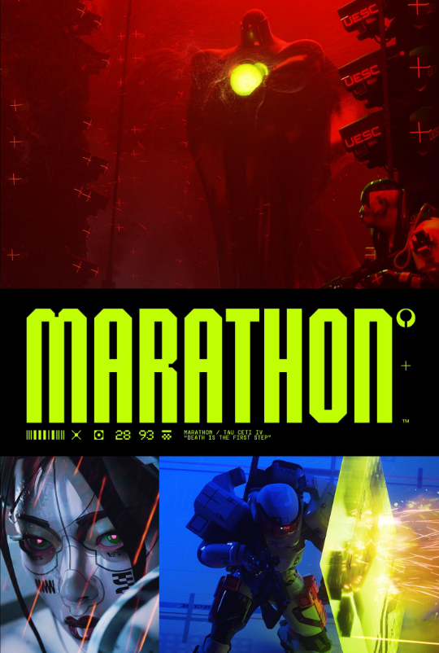
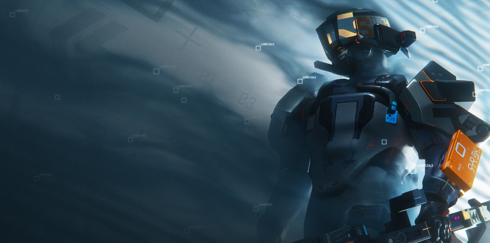

POSTER- BỐ CỤC
[01] POSTER QUẢNG CÁO GAME
COMPOSITION: 40 / 15 / 45Poster được chia theo trục dọc thành ba dải: khoảng 40% phía trên, 15% dải chữ ở giữa và 45% phần dưới gồm hai khung hình. Dải đen ngang tạo điểm ngắt giữa các lớp hình ảnh và làm nổi bật tên game.

PHÂN CHIA KHUNG HÌNH
- 40% phía trên: khối quái vật khổng lồ, lõi phát sáng trên nền đỏ.
- 15% dải giữa: dải đen ngang chứa chữ MARATHON, là điểm hút thị giác cấp 1.
- 45% phía dưới: hai khung nhỏ, cận mặt Runner bên trái và Runner giơ khiên bên phải.
THỨ TỰ ĐIỂM NHÌN
- MARATHON: tên game màu xanh dạ quang ở dải ngang chính giữa.
- Quái vật: hình khối áp đảo với phần lõi phát sáng.
- Hai Runner: các khung cận cảnh bổ sung hành động và nhân vật.
HỆ MÀU & TYPOGRAPHY
ĐỎ
Nguy hiểm, áp bức
XANH DƯƠNG
Đối lập với đỏ
TRẮNG XÁM
Lạnh, cân bằng
NEON LIME
Điểm liên kết nổi bật
ĐEN
Tăng tương phản logo
MARATHON // DISPLAY TYPE
Chữ dày và rộng, có các vát chéo tạo điểm nhấn. Các khoảng hở được xếp khít, khiến toàn bộ từ trông như một khối thống nhất.
SUPPORTING COPY
“Marathon / Tau Ceti IV / 28 93” mang thông tin thời gian và địa điểm bối cảnh. “Death is the first step” đóng vai trò câu hook dẫn dắt cho game.
[02] POSTER GIỚI THIỆU NHÂN VẬT MỚI
NEW DESTROYER PACKDestroyer là key visual và được đặt lệch về phía bên phải theo bố cục 1/3. Phía trái để trống với lớp sương mù, tạo khoảng thở và cân bằng khối nhân vật. Góc máy được tài liệu mô tả là góc thấp nhìn từ dưới lên.

BỐ CỤC & ĐƯỜNG DẪN MẮT
- Key visual: Destroyer chiếm phần lớn khu vực bên phải.
- Khoảng trống: bên trái phủ sương mù, làm nền đối trọng với nhân vật.
- Điểm nhìn: visor cam trên đầu → hộp cam phía tay trái → vũ khí của nhân vật.
- Góc máy: góc thấp, nhìn từ dưới lên.
MÀU SẮC & ÁNH SÁNG
- Xanh lam: gần như đơn sắc, chuyển từ navy đậm bên trái qua xanh xám đến trắng xanh nhạt bên phải.
- Cam: tương phản nóng – lạnh với nền xanh, tập trung ở visor và hộp.
- Backlight: ánh sáng hắt từ sau ra trước, tạo viền trắng ở vai và cạnh giáp để tách nhân vật khỏi nền.
- Tương phản sáng – tối: bên phải sáng hơn, bên trái tối hơn.
NAVY
Nền tối / phía trái
BLUE GRAY
Thân giáp
ICE BLUE
Vùng sáng / viền sáng
ORANGE
Điểm nhấn nóng
[03] POSTER VISUAL REFERENCES

POSTER 01 // MAIN GAME

POSTER 02 // CHARACTER

POSTER 03 // PROMOTIONAL